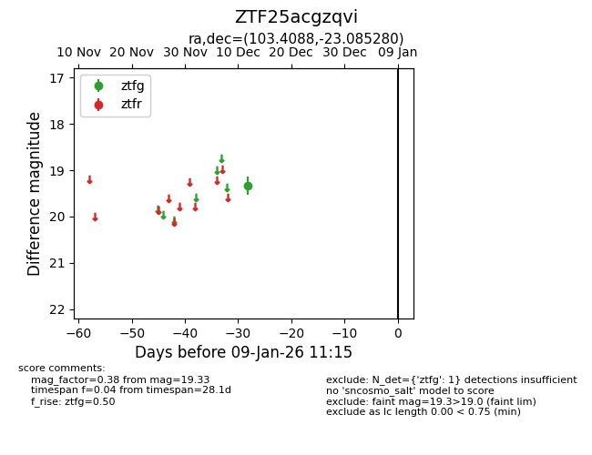
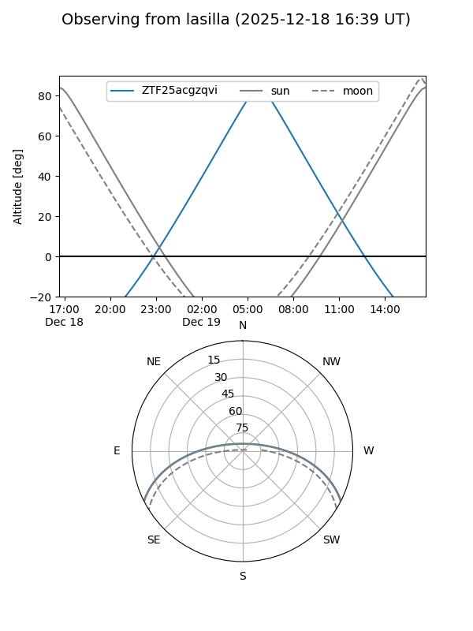
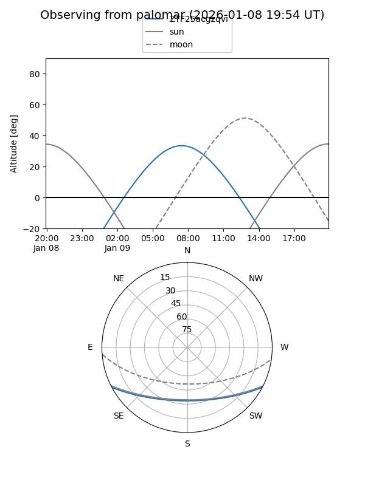

ZTF25acgzqvi
Target ZTF25acgzqvi at 2025-12-18 11:18
Aliases and brokers:
FINK: fink-portal.org/ZTF25acgzqvi
Lasair: lasair-ztf.lsst.ac.uk/objects/ZTF25acgzqvi
ALeRCE: alerce.online/object/ZTF25acgzqvi
alt names
ZTF25acgzqvi (ztf,fink_ztf)
Coordinates:
equatorial (ra, dec) = 103.4088,-23.08528
equatorial (HMS+DMS) = 06:53:38.11,-23:05:07.01
galactic (l, b) = (233.9253,-9.84262)
Photometry
last ztfg=19.33
1 ztfg detections
Lightcurve

Visibility


Additional plots